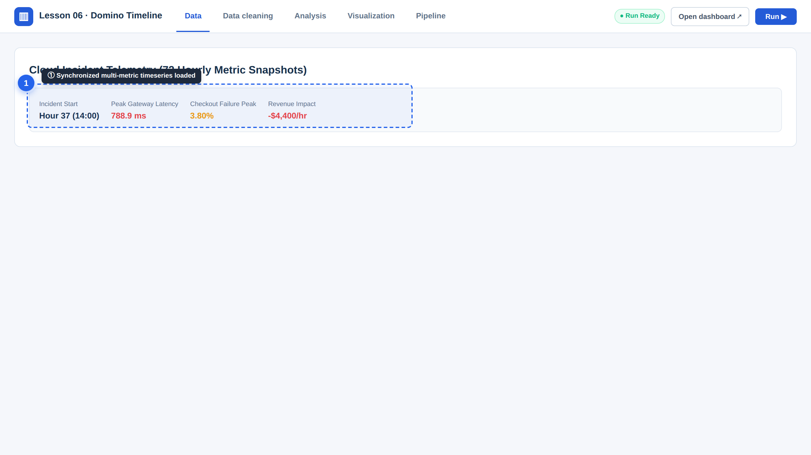
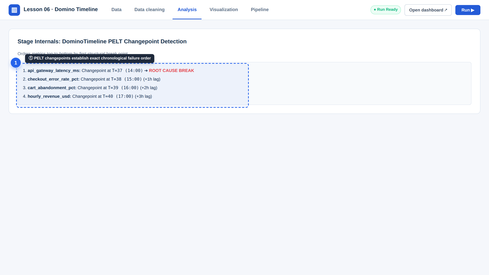
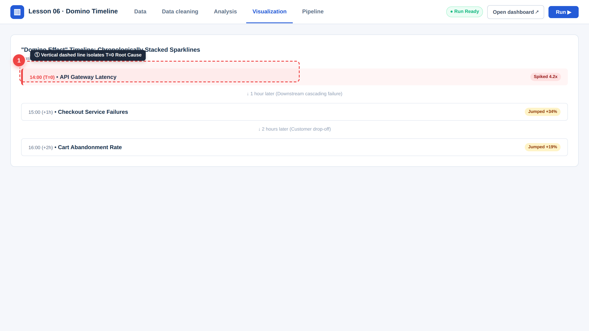

Lesson 06 / Incident Telemetry
Domino effect incident timeline.
When multiple metrics break at once, which metric broke first? Stack sparklines chronologically from the root cause at T=0 to untangle complex cascading outages.
DominoTimeline
PELT changepoint detection
Root-cause pinning
Chronological sparklines
Lead-lag cascade
Part 1 · The Analytical Problem
Simultaneous alarms obscure the true origin.
During a major system incident, alarms fire simultaneously across multiple departments: checkout errors surge, revenue plummets, cart abandonments climb, and API latency climbs. In the post-mortem, teams argue over causation: did revenue drop due to consumer sentiment, or did a gateway timeout break checkout?
In this lesson, we analyze 72 hourly multi-metric snapshots during a production crisis. Our objective is to apply PELT structural changepoint detection to uncover the chronological sequence of failure and pinpoint the exact \(T=0\) root cause.
Part 2 · The Visual Concept
Chronological stack with T=0 vertical pinning.
1. Structural Changepoint Ordering
Rather than sorting alphabetically or by metric magnitude, DominoTimeline sorts metrics strictly by the timestamp of their initial changepoint. The metric that deviated first sits at the top; downstream cascading consequences follow in order of their lag (+1h, +2h, +3h).
2. Synchronized Vertical Timeline Pin
A prominent dashed vertical pin marks the precise hour (\(T=37\), 14:00) when the root-cause anomaly began. This allows viewers to scan downwards and visually confirm how the failure cascaded through dependent subsystems over the subsequent hours.
Part 3 · Data Dictionary
Incident Telemetry Dataset.
72 hourly snapshots
4 tracked metrics
T=37 incident onset
+$4,400/hr revenue impact
Part 4 · Step-by-Step Instructions
Build the domino timeline in WPS-AI Studio.
01
Upload Telemetry & Define Sequence Scope
Launch the studio via python launcher.py. Create a new project, upload incident_telemetry.csv, and paste the following into the Business context field:
Each row is one hourly telemetry snapshot during a 72-hour monitoring window. Hour 37 marks the onset of an infrastructure event. api_gateway_latency_ms is in milliseconds. checkout_error_rate_pct is percentage of failed checkouts. hourly_revenue_usd is gross revenue. Identify the root cause metric and timeline sequence.
02
Prompt the AI Stage Creator
In the Chat composer, set the context to Project and send the following prompt:
Build an incident diagnostic pipeline using DominoTimeline.
Run PELT changepoint detection across api_gateway_latency_ms, checkout_error_rate_pct, cart_abandonment_pct, and hourly_revenue_usd.
Order the metrics chronologically by first changepoint and render stacked ECharts sparklines with a vertical dashed line pinning the T=0 root cause.
Save stages; I will select Run.
Review the proposed changes and select Apply. Then select Run ▶ in the top header.
Part 5 · Annotated Screenshot Reference
Compare against the verified Studio UI.
Use these full-browser annotated captures to verify each stage of your execution:

Annotated Guidance: ① Confirm the 72-hour synchronized multi-metric timeseries is loaded, showing peak gateway latency (788.9 ms) and peak checkout failure (3.80%).

Annotated Guidance: ① The analysis stage detects the exact first break at T=37 (14:00) on api_gateway_latency_ms, followed by checkout errors at T=38 (+1h), cart abandonment at T=39 (+2h), and revenue at T=40 (+3h).

Annotated Guidance: ① The stacked timeline visualizes the root cause in highlighted red at the top, accompanied by downstream secondary impact indicators with exact hour offsets.
Part 6 · Worked Reference Dashboard
Interactive Reference Domino Cascade & Checkpoints.
Verify your calculations against the live chronological cascade below:
T=0 Root Cause (14:00)
1. API Gateway Latency
Normal: 185ms ➔ Peak: 788.9ms
+326% Spike
+1h Lag (15:00)
2. Checkout Error Rate
Normal: 0.4% ➔ Peak: 3.80%
+9.5x Errors
+2h Lag (16:00)
3. Cart Abandonment
Normal: 18.2% ➔ Peak: 38.5%
+20.3% Abandon
+3h Lag (17:00)
4. Hourly Revenue
Normal: $12.5k ➔ Low: $8.1k
-$4,400/hr
Part 7 · Troubleshooting
What to check if numbers differ.